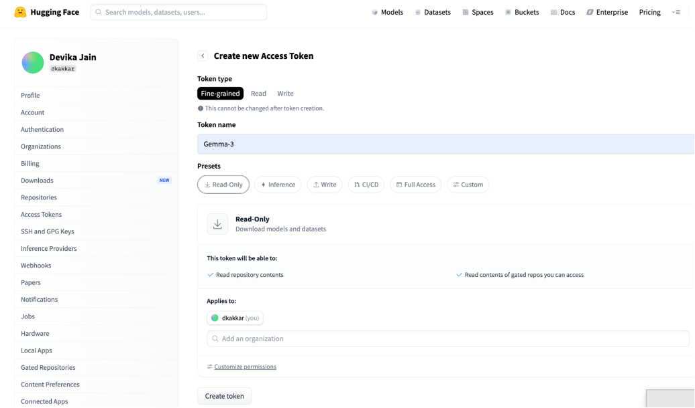
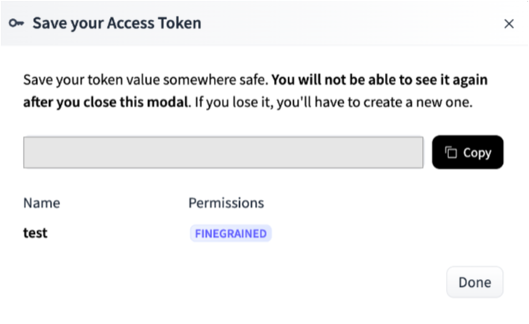
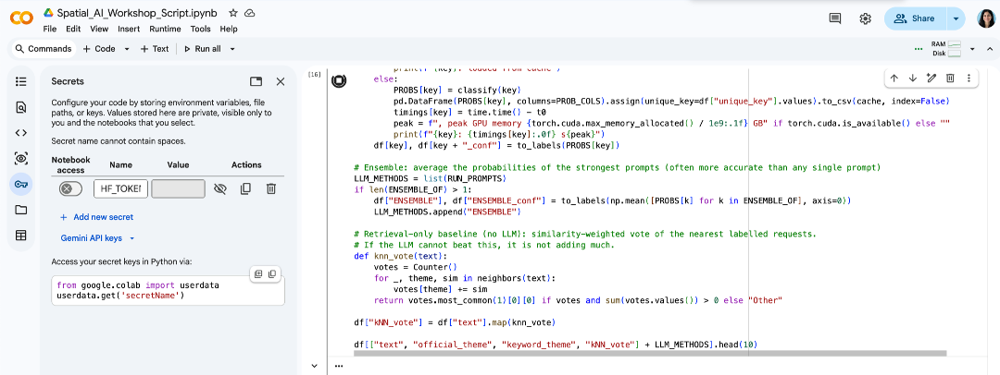
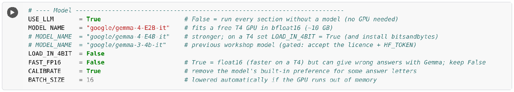
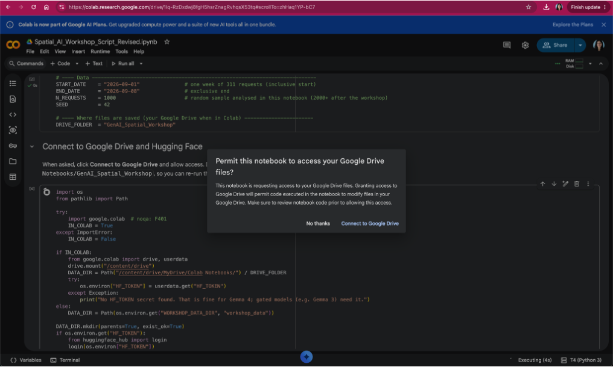
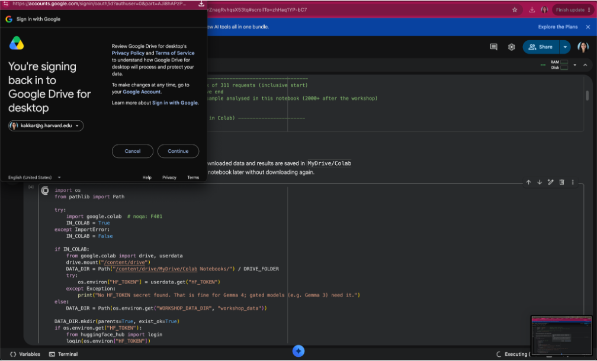
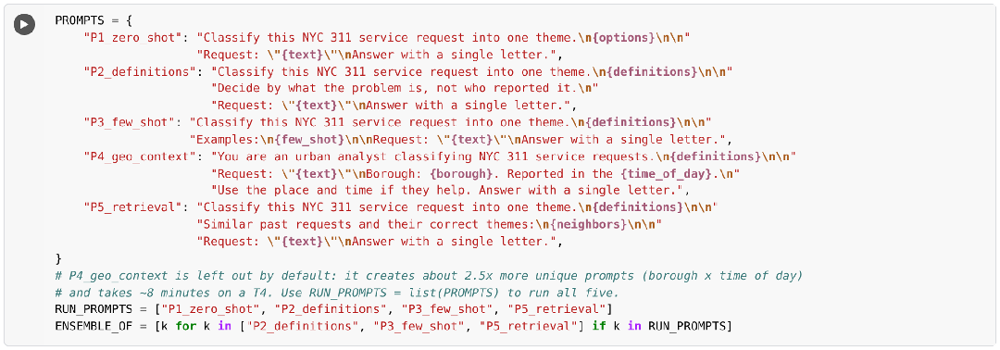

Overview
In this workshop you will use Gemma 4, an open large language model (LLM) from Google, to classify one week of real NYC 311 service requests into themes. We will evaluate the results against the official complaint types and map the labels. Everything runs in your browser in Google Colab, with nothing to install on your laptop.
| Component | What it is | What you need |
|---|---|---|
| Google Colab | Free browser-based Python notebooks with a GPU | A Google account |
| Hugging Face (HF) | Hosts the Gemma 4 model and other open models | A free account and a Read access token (recommended) |
| NYC Open Data | Source of the 311 service requests | Nothing: the notebook downloads the data |
| Github Repository | Repository GenAI_Spatial_Workshop: notebook, slides, these instructions | Workshop GitHub repository |
| Notebook | Spatial_AI_Workshop_Script.ipynb | Workshop Notebook |
You will need: a laptop with an up-to-date Chrome, Firefox or Safari browser and an internet connection. Basic Python familiarity (running cells, changing a value) is helpful but not required.
What the notebook covers
| Part | Topic | What you do |
|---|---|---|
| 1 | Data | Download a week of NYC 311 requests and explore them |
| 2 | Keyword Search | Classify requests into 7 themes with keyword search |
| 3 | Load Gemma 4 from HF | Load the model from Hugging Face on the Colab GPU |
| 4 | Prompt design | Five prompts, an ensemble and a retrieval-only baseline, all with constrained decoding |
| 5 | Evaluation | Accuracy, macro F1, Cohen’s kappa, calibration and disagreements against the official complaint types; map of the labels |
| 6 | Next Steps | Follow-up exercises |
Part A: Before the workshop — account creation
Step 1. Create a Google account (skip if you already have one)
Google Colab and Google Drive both use your Google account. A personal Gmail account works best; some university Google Workspace accounts have Colab turned off.
- Go to accounts.google.com/signup (or click Create account on any Google sign-in page and choose For my personal use).
- Enter your first and last name and click Next.
- Enter your date of birth and gender, then click Next.
- Choose a Gmail address (or select Use your existing email) and click Next.
- Create a password, confirm it, and click Next.
- If asked, enter a phone number and type the verification code Google sends you.
- Review the recovery information, then read and agree to the Privacy and Terms.
- Check it worked: open colab.research.google.com. You should see the Colab start page with your account icon in the top-right corner.
Step 2. Create a Hugging Face account
Hugging Face hosts the Gemma 4 model that the notebook downloads.
- Go to huggingface.co/join.
- Enter your email address and a password, then click Next.
- Choose a username, enter your full name, accept the Terms of Service and Code of Conduct, and click Create Account.
- Open the confirmation email from Hugging Face and click the verification link.
Step 3. Create a Hugging Face access token
A token lets the notebook download models as you rather than anonymously, which avoids download limits and is required for gated models.
- Click your profile picture (top-right) → Settings → Access Tokens, or go to huggingface.co/settings/tokens.
- Click + Create new token.
- Choose the Read token type, name it (for example Gemma), and click Create token (Figure 1).
- Click Copy (Figure 2) and save the token somewhere private. You will not be able to see it again after closing the window — if you lose it, create a new one.


hf_). The value is hidden here on purpose.Part B: Start of the workshop — open the notebook in Colab
Step 4. Open the workshop folder on Github Reporsitory
- Open the workshop folder GenAI_Spatial_Workshop (or scan the QR code on the slides). Make sure you are signed in to the Google account from Step 1.
- The folder contains
Spatial_AI_Workshop_Script.ipynb(the notebook), the slides, these instructions and, as a backup,nyc311_snapshot.csv(the data, in case the NYC Open Data website is slow).
Step 5. Open the notebook in Colab and save your own copy
- Double-click
Spatial_AI_Workshop_Script.ipynb, then click Open with → Google Colaboratory at the top of the preview. - If Google Colaboratory is not listed: choose Open with → Connect more apps, search for Colaboratory, click Install, and try again.
- In Colab, click File → Save a copy in Drive. Work in the copy that opens (“Copy of Spatial_AI_Workshop_Script.ipynb” in My Drive/Colab Notebooks) so your changes are saved.
- If Colab warns that the notebook was not authored by Google, click Run anyway when you run the first cell.
Step 6. Turn on the free GPU
- Click Runtime → Change runtime type.
- Under Hardware accelerator, select T4 GPU and click Save.
- Click Connect (top-right). When connected you will see a green check mark and the RAM / Disk bars.
USE_LLM = False in the Settings cell. Every part still runs, using offline stand-ins instead of the model, so you can follow along.Step 7. Add your Hugging Face token as a Colab secret
- In the left sidebar of Colab, click the key icon (Secrets) (Figure 3).
- Click + Add new secret.
- In Name, type exactly
HF_TOKEN(capital letters, no spaces). - In Value, paste the token from Step 3.
- Switch on the Notebook access toggle.

HF_TOKEN name. The token value is hidden.Part C: Run the notebook step by step
Run the cells in order from top to bottom with Shift + Enter (or the ▶ button). A green check mark appears when a cell finishes. If something goes wrong, use Runtime → Restart session and run the cells again from the top.
| Part | Typical time on a T4 |
|---|---|
| Install, settings, Drive, load data | 3–5 minutes (data download runs once; it is cached on your Drive) |
| Part 3: load Gemma 4 and sanity check | 2–5 minutes the first time (model download), plus under a minute for the check |
| Part 4: four prompts on 1,000 requests | About 14 minutes for the four default prompts (P4_geo_context adds about 8 more); only unique prompts are scored, and results are cached on Drive |
| Part 5 | About 1 minute |
These are estimates; Colab GPU speed varies. Each prompt in Part 4 prints its own run time.
Install and settings
The first cell installs a few extra libraries (about 1 minute). If Colab asks you to Restart the session, click it and continue with the next cell. The Settings cell controls the model and data:

| Setting | Default | What it does |
|---|---|---|
USE_LLM | True | False runs every part without a model (no GPU needed) |
MODEL_NAME | google/gemma-4-E2B-it | Gemma 4 E2B fits a free T4. E4B is stronger but needs LOAD_IN_4BIT = True on a T4 |
FAST_FP16 | False | Keep False. The model runs in bfloat16, which is reliable. float16 is faster on a T4 but can give invalid numbers with Gemma |
CALIBRATE | True | Removes the model’s built-in preference for some answer letters (for example A) |
BATCH_SIZE | 16 | Prompts processed together; halved automatically if the GPU runs out of memory |
START_DATE, END_DATE | one week | Which week of 311 requests to download |
N_REQUESTS | 1000 | Size of the random sample analysed |
Connect to Google Drive and Hugging Face
A pop-up asks Permit this notebook to access your Google Drive files? Click Connect to Google Drive, choose your account, tick Select all and click Continue. Colab may also ask “Grant access to HF_TOKEN?” — click Grant access. The cell prints the Drive folder where data and results are saved (MyDrive/Colab Notebooks/GenAI_Spatial_Workshop).


Part 1: Data
- Downloads one week of 311 requests from NYC Open Data and saves a copy to your Drive. Street addresses are deliberately not downloaded.
- If the download fails, copy
nyc311_snapshot.csvfrom the workshop folder intoMyDrive/Colab Notebooks/GenAI_Spatial_Workshopand run the cell again. - Builds the text the model reads (the descriptor and location type, e.g. “Banging/Pounding; location: Residential Building/House”) and maps each official complaint type to one of 7 themes: Noise; Housing & Buildings; Streets, Traffic & Parking; Sanitation & Cleanliness; Trees, Parks & Environment; Homelessness & Public Safety; Business & Consumer. These official themes are the answer key.
- Shows requests by borough, the top complaint types, requests by hour and a clustered point map.
Part 2: Keyword baseline
A simple rule-based classifier that looks for words such as “parking” or “mold”. It is the benchmark the LLM has to beat.
Part 3: Load Gemma 4
Downloads and loads the model. Check that the output shows GPU: Tesla T4 and Precision: bfloat16. The cell ends with a one-sentence test answer from the model.
Sanity check (end of Part 3)
Before classifying 1,000 requests, the notebook scores seven obvious requests, one per theme, and shows a table with the expected theme, the scored theme, the confidence and the model’s free-text reply.
- “OK: 6/7 correct” or better: continue to Part 4.
- “WARNING: only N/7 correct”: stop. Part 4 would give near-random labels. Check that
FAST_FP16 = False, then Runtime → Restart session and run from the top. If it still fails, look at thefree_replycolumn and ask the instructor.
Part 4: Prompt design (constrained decoding)
The themes are listed as letters A–G. The notebook starts the model’s reply with “Answer:” and reads the probability of each letter as the next word. The answer is always a valid theme, it comes with a confidence score, and it is much faster than generating text. With CALIBRATE = True, each prompt is also scored once with an empty request (“N/A”) to remove the model’s built-in preference for some letters.
| Method | Strategy |
|---|---|
P1_zero_shot | Plain instruction with the list of themes |
P2_definitions | Adds a precise definition of every theme |
P3_few_shot | Definitions plus 14 real example requests |
P4_geo_context | Definitions plus the borough and time of day (not run by default: it takes about 8 minutes) |
P5_retrieval | Definitions plus the 8 most similar past requests and their correct themes (from the rest of the week, not the evaluation sample) |
ENSEMBLE | Average of the P2, P3 and P5 probabilities |
kNN_vote | The 8 similar requests vote, with no LLM: a check that the model adds value |

RUN_PROMPTS runs four prompts and skips P4_geo_context to save time; use RUN_PROMPTS = list(PROMPTS) to run all five. Short on time? Set RUN_PROMPTS = ["P2_definitions", "P5_retrieval"]. If you see “GPU memory full: lowering the batch size”, the notebook is recovering by itself; just let it continue.The last cell of Part 4 asks the model for free-text answers on 40 requests, to show why parsing free text is less reliable than constrained answers.
Part 5: Evaluation
In our test run (Gemma 4 E2B, 1,000 requests, all five prompts), the sanity check scored 7/7 and the four default prompts took about 14 minutes. Your numbers should be close:
- Accuracy, macro F1 and Cohen’s kappa for every method against the official themes, with a majority-class baseline.
- Confusion matrix for the best method: which themes get mixed up.
- Calibration: is the model right as often as it is confident? And the trade-off of accepting only confident answers.
- Disagreements to review by hand. Some are model errors; others show that the official categories or our theme map are debatable.
- Map of the labels: every request coloured by its LLM theme, plus the share of each theme by borough. Set
MAP_COL = "official_theme"to compare with the official labels.
Part 6: Next steps — try it yourself
- Write a new prompt in
PROMPTS(e.g."P6_my_prompt"), add it toRUN_PROMPTSand rerun Parts 4–5. Can you beat the ensemble? - Switch
MODEL_NAMEtogoogle/gemma-4-E4B-itwithLOAD_IN_4BIT = True. How do accuracy, calibration and run time change? - In the map at the end of Part 5, set
MAP_COL = "official_theme". Where do the LLM and official labels disagree? - Run all five prompts with
RUN_PROMPTS = list(PROMPTS). Does adding the borough and time of day (P4_geo_context) help?
Part D: Troubleshooting
| Problem | Fix |
|---|---|
| “CUDA out of memory” or the session crashes | Runtime → Restart session and run from the top. The notebook halves the batch size automatically; you can also set BATCH_SIZE = 8. Use E2B, not E4B, on a T4. |
GPU: none – switch to a T4 runtime | Runtime → Change runtime type → T4 GPU → Save, then rerun from the top. If no GPU is available, set USE_LLM = False. |
| 401 / 403 or “gated repo” error when loading the model | Check the HF_TOKEN secret (Step 7) and accept the model’s licence on its Hugging Face page with the same account. |
| 311 download fails or is very slow | Copy nyc311_snapshot.csv from the workshop folder to MyDrive/Colab Notebooks/GenAI_Spatial_Workshop and rerun the data cell. |
| Part 4 is slow | Keep N_REQUESTS = 1000, run fewer prompts (RUN_PROMPTS), and do not re-run cells unnecessarily (results are cached). |
| Sanity check shows “WARNING: only N/7 correct” | Set FAST_FP16 = False, Runtime → Restart session, and run from the top. Do not continue to Part 4 until the check passes. |
| “N prompts gave invalid numbers; re-scoring them one at a time” | Nothing to do: the notebook retries them. If a WARNING follows, set FAST_FP16 = False and restart the session. |
| Almost every request is labelled Noise (or one other theme) | The scores are not valid. Restart the session with FAST_FP16 = False and check the sanity check before Part 4. |
| Colab disconnected | Reconnect and run from the top. Data and Part 4 results load from your Drive cache. |
| Colab will not open with your university account | Use a personal Gmail account (Step 1). |
By the end of the workshop you’ll be able to combine LLMs with spatial data, from classification and evaluation to mapping the results.